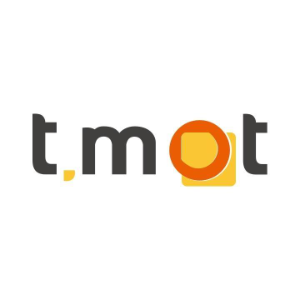
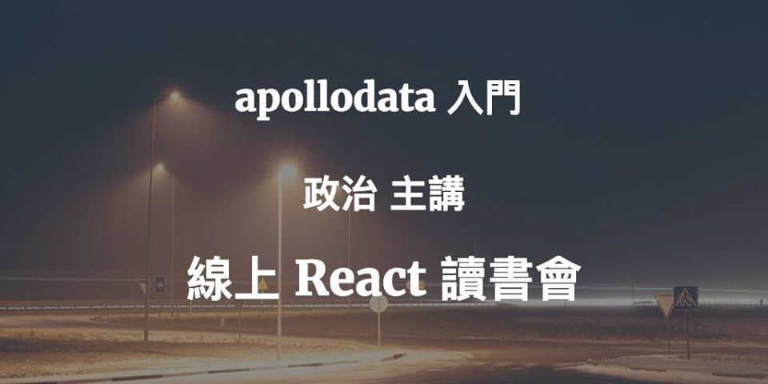

Highlights
- Have four year experience in web development. Focus on code style, design patterns and debug skills.
- Familiar with React.js ecosystem, Next.js, GraphQL and TypeScript.
- Familiar with SEO issues, Web Vitals, AMP, and all the details how to implement with React SSG.
- Like to perfect every pixel, have good UI/UX sensitivity and got 7430 points on Can't Unsee .
- Familiar with the Github flow and code review.
- Experienced in back-end development such as Express.js, RMDBS, MongoDB.
- Familiar with web security issues such as SQL Injection, XSS, CSRF, etc.
- I am an Ubuntu lover and have been programming with Ubuntu for four years.
- Willing to share and like to participate in the programming community.
- Have experience in mentoring junior level developers.
Work Experiences
Pagamo - Front End Engineer
- Designed front-end technical interview questions, conducted live coding interviews.
- Developed the teacher dashboard, esports management dashboard, game transaction interfaces, and maintained web canvas game.
- Implemented TypeScript to refactor the design system to enhance the developer experience.
PopDaily - Front End Engineer
- Developed the features about SEO, e-commerce and advertisements.
- Refactored lots of legacy code from EJS system into React, and unified the user interface design system.
- Fixed the critical bug about data exposed caused by React SSG.
- Developed AMP pages for improving the SEO score, and achieve the KPI early.
- Built a code generator to help our editors using <blockquote> to embed Instagram post because Instagram shut down the oEmbed API, the editor on Wordpress did not work properly, and I fix the Instagram Embed iframe didn't work properly by trace the uglified script code.
Canner Technology - Front-end Engineer
- Developed the system with React.js, styled-components and Ant Design.
- Refactored legacy code from render props to hooks, and fixed typo and simplify the complex props passing between components.
- Optimized the infinite scroll feature to display large amounts of data for ensuring user experience.
- Designed the login user interface with Keycloak and updated our official website to maintain the consistency of the product on the UI.
- Designed the GraphQL API with back-end engineers, and used apollo-tool to generate type signatures to increase code quality.
- Implemented the data pipeline from our big data engine to many business intelligence softwares, such as Tableau, Metabase and Power BI.
AlphaCamp - Online Course Teaching Assistant
- Answered students' questions about web development and reviewed their homeworks.
- Had tutored more than a thousand students.
- Hosted a webinar to answer students' questions in real time, which was more heart-warming than other online courses.
- Awarded the Most Answered Teaching Assistant in 2019 and 2020 Q&A

Tmot Technology - Full-end Engineer
- Built an isomorphic JavaScript application with React, Next.js, Express.js.
- Built the user interface with Semantic UI and Ant Design.
- Developed the server API with GraphQL and improved the efficiency of PostgreSQL Query, and built a Medium crawler to update the company's latest showcases to our official website.
- Developed an image and video converter with sharp and FFmpeg, and deployed to it on AWS lambda for optimize server resources. I also answered the questions in the programming community with this experience.
- Taught our marketing department to write CSS for event pages and email marketing.
- Wrote a crawler to monitor page ranking and it could send customized notifications to our Slack channel.
Community Participations

{kind=link}
Online Studying Group - Introducing React Apollo
Contact Me
| Name | Zhen-zhi He |
| wl00887404@gmail.com |